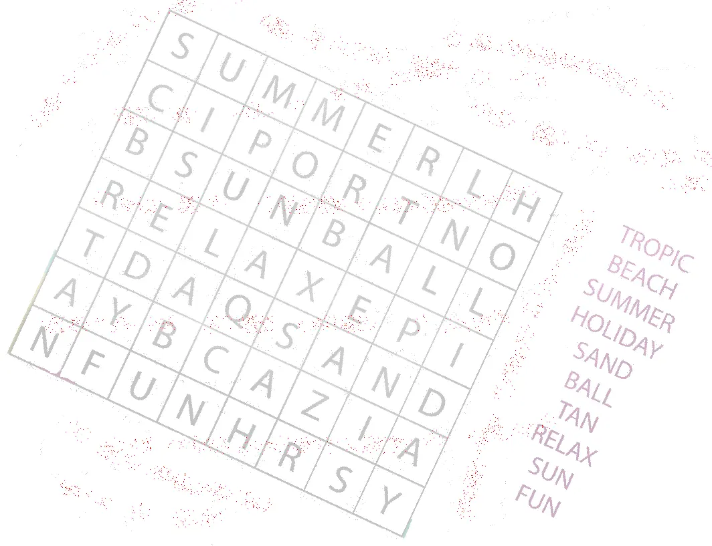
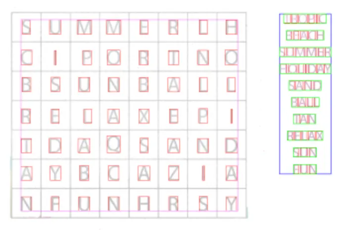
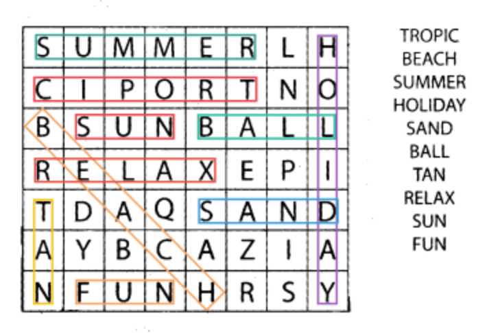

CiaOCR is a word-search solver built from scratch. You hand
it a photo of a puzzle, it cleans the image, reads the grid,
finds every listed word and draws the solution back onto the
page.
No third-party OCR engine. The whole pipeline, skew
correction, segmentation, character recognition and solving,
was written by hand.

the input, straight off a phone
First step: straightening the page. The algorithm runs
simulated rotations from -30° to 30° and picks the angle
that maximises the variance of horizontal projection
profiles, the orientation that lines the text rows up best.
ImageMagick applies the rotation, a median filter scrubs
digital noise without eating the letter edges.

segmentation, character by character
Each character is isolated with a connected- component flood
fill, which spits out a bounding box per glyph. Touching
letters are the tricky case: when a box comes out abnormally
wide, a second pass looks for vertical density minima inside
it and surgically splits the merged characters apart.

solution, drawn back on the original
A neural network then turns each glyph's pixels into letter
probabilities. The grid gets rebuilt cell by cell, and the
solver scans it in all directions to locate each word from
the list.
Last step: drawing the answers. Once the words are located
on the virtual grid, CiaOCR walks backwards through the
geometric metadata it kept around (where each cell sits in
the original photo, what rotation was applied) and draws the
coloured boxes straight onto the input image.